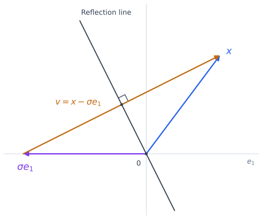

Householder Reflections#
QR factorization turns a least-squares problem into a triangular system. To compute it, we need a way to introduce zeros below the diagonal while preserving lengths and angles. A Householder reflection does exactly this: it can turn a column into a multiple of a coordinate vector. Applying these reflections one column at a time gives the QR factorization.
Throughout this page, \(A\in\mathbb{R}^{m\times n}\) with \(m\ge n\). We first construct a single reflection, then use it to factor \(A\), and finally explain how to store and use the factors efficiently.
The Goal: Orthogonal Triangularization#
The full QR factorization has the form
where \(Q\in\mathbb{R}^{m\times m}\) and \(R_1\in\mathbb{R}^{n\times n}\) is upper triangular. The rectangular matrix \(R\) is called upper trapezoidal: its entries below the diagonal are zero.
Equivalently, \(Q^TA=R\). This suggests an algorithm: apply orthogonal transformations to \(A\) until its entries below the diagonal vanish. Each transformation must preserve the zeros created by the preceding transformations.
If \(Q_1\) consists of the first \(n\) columns of \(Q\), then \(A=Q_1R_1\) is the reduced QR factorization used in least squares. No rank assumption is needed to construct QR; full column rank is needed when we solve a system with \(R_1\).
Reflecting Across a Hyperplane#
Let \(v\in\mathbb{R}^d\) be nonzero. The hyperplane perpendicular to \(v\) consists of the vectors \(z\) satisfying \(v^Tz=0\). To reflect a vector across this hyperplane, we reverse its component parallel to \(v\) and leave its perpendicular component unchanged.
The two components of any \(z\) are
Thus the reflected vector is
This gives the Householder matrix
In particular, \(Pv=-v\), whereas \(Pz=z\) for every \(z\) perpendicular to \(v\).
Proof. Symmetry and Orthogonality. Set \(B=vv^T/(v^Tv)\). Since \(vv^T\) is symmetric, both \(B\) and \(P=I-2B\) are symmetric. Also,
It follows that
Because \(P^T=P\), this also proves \(P^TP=I\): the reflection is orthogonal. Consequently,
The identity \(P^2=I\) says that reflecting twice returns the original vector.
Making a Column Zero Below Its First Entry#
For a nonzero vector \(x\in\mathbb{R}^d\), we want
Here \(e_1\) is the first coordinate vector. Since \(P\) preserves length, the target must satisfy \(|\sigma|=\|x\|_2\). We therefore have two choices: \(\sigma=\|x\|_2\) or \(\sigma=-\|x\|_2\).
Choose a target different from \(x\) and set
This difference points in the direction that the reflection must reverse.


Fig. 3 A Householder reflection in two dimensions. The vectors \(x\) and \(\sigma e_1\) have equal length and are mirror images across the reflection line. The orange arrow represents \(v=x-\sigma e_1\), drawn from the tip of \(\sigma e_1\) to the tip of \(x\). It is perpendicular to the reflection line, which becomes a hyperplane in higher dimensions.#
Proof. The Reflection Maps \(x\) to \(\sigma e_1\). The choice \(\sigma^2=\|x\|_2^2\) gives
Since \(v\ne0\), we can substitute this identity into the reflection formula:
All entries after the first are therefore zero.
The geometry agrees with this calculation: the midpoint of \(x\) and \(\sigma e_1\) lies in the reflection hyperplane, because
If \(x=0\), there is nothing to eliminate, so we use \(P=I\). We may also use the identity when \(x\) already has zeros after its first entry. These cases avoid dividing by zero when constructing a reflector.
Choosing the Sign to Avoid Cancellation#
The two targets are equally valid in exact arithmetic, but their numerical behavior can differ. If \(\sigma\) has the same sign as \(x_1\) and \(x\) is nearly parallel to \(e_1\), then
is the difference of two nearly equal numbers. A small error in the computed norm can then cause a large relative error in this small component.
We avoid this by choosing the opposite sign. Define
The convention at zero matters: when \(x_1=0\) but \(x\ne0\), the target still needs a nonzero first entry. With this choice,
The two terms have the same sign, so this component is formed without cancellation. This sign choice is one ingredient of a reliable implementation. For vectors with very large or very small entries, computing the norm and the reflector also requires scaling to avoid overflow or underflow. The LAPACK reflector routine handles these details.
Applying a Reflection Efficiently#
Before using reflections on a matrix, we need an efficient way to apply them. For a block \(C\in\mathbb{R}^{d\times t}\),
There is no need to form the \(d\times d\) matrix \(P\). Instead:
Compute the row vector \(w^T=v^TC\).
Update each entry of \(C\) using \(C_{ij}\leftarrow C_{ij}-(\beta v_i)w_j\).
This update needs only the vector \(v\), the scalar \(\beta\), and a work vector \(w\). It costs approximately \(4dt\) floating-point operations, counting multiplication and addition separately. Multiplying by an explicitly formed dense \(P\) would cost \(O(d^2t)\) and require \(O(d^2)\) storage.
Building the QR Factorization Column by Column#
Set \(A^{(0)}=A\). At step \(k\), suppose the first \(k-1\) columns already have zeros below the diagonal. The entries we need to eliminate are in the vector
the part of column \(k\) from row \(k\) to row \(m\). Construct a local reflector \(P_k\) such that \(P_kx=\sigma_k e_1\), and extend it to the full matrix by defining
For \(k=1\), this simply means \(H_1=P_1\). We use \(H_k\) for the individual transformations to distinguish them from the final factor \(Q\).
Why do the earlier zeros survive? The first \(k-1\) rows are unchanged because of the identity block. In each earlier column, the entries in rows \(k\) through \(m\) are already all zero, so multiplying that segment by \(P_k\) leaves it zero. Meanwhile, the new column segment becomes \(\sigma_ke_1\). Thus the first \(k\) columns have the required zeros.
Repeat for
steps. A square matrix needs no reflection on its last column, since there are no entries below its last diagonal entry. If an active column segment is zero, take \(H_k=I\) and continue.
The result is upper trapezoidal:
Every \(H_k\) is symmetric and orthogonal. Transposing the product reverses its order, so
A product of orthogonal matrices is orthogonal: its transpose times itself reduces to \(I\) by successively cancelling each \(H_k^TH_k\). Therefore \(R=Q^TA\), and multiplying by \(Q\) gives \(A=QR\). This proves the factorization. If \(s=0\), the empty product is the identity.
When \(A\) has full column rank, \(R_1\) is invertible. Indeed, \(A=Q_1R_1\) and \(Q_1^TQ_1=I\), so \(Ax=0\) if and only if \(R_1x=0\). Full column rank means that this null space contains only the zero vector.
Using and Storing the Factors#
Applying \(Q^T\) in Least Squares#
We usually store the reflections rather than form the full matrix \(Q\). To compute
apply \(H_1\) first, then \(H_2\), and continue through \(H_s\). To apply \(Q\) instead, use the reverse order.
For least squares, partition the transformed right-hand side as
Orthogonality preserves the residual norm, giving
The second term does not depend on \(x\). If \(A\) has full column rank, back substitution solves \(R_1x=c_1\), making the first term zero. The minimum residual norm is \(\|c_2\|_2\). Thus we solve only the top triangular system; the remaining rows describe the residual.
Storing Reflections Below the Diagonal#
The entries below the diagonal of \(R\) are zero, so their locations can store the reflection vectors. To do this without overwriting a diagonal entry of \(R\), normalize each nontrivial vector:
The first entry of \(u_k\) is \(1\), so it need not be stored. Store its remaining entries below the diagonal in column \(k\), and store \(\tau_k\) in a separate array. An identity transformation is represented by \(\tau_k=0\).
The resulting array contains \(R\) on and above the diagonal and the reflector data below it. These stored entries below the diagonal are not entries of \(R\). This representation allows both the factorization and later applications of \(Q\) or \(Q^T\) without storing a dense orthogonal matrix.
Computational Cost#
We count a multiplication and an addition as separate floating-point operations, or flops.
At step \(k\), the active block has \(d=m-k+1\) rows and \(t=n-k+1\) columns. The product \(v^TC\) requires \(dt\) multiplications and \(t(d-1)\) additions, approximately \(2dt\) flops. The update \(C-(\beta v)w^T\) requires another \(dt\) multiplications and \(dt\) subtractions, approximately \(2dt\) flops. Computing the reflector and scaling \(\beta v\) adds only \(O(d)\) operations.
Summing the leading update costs gives
To evaluate the sum, write \(j=k-1\) and expand the product as \(mn-(m+n)j+j^2\). Summing through \(j=n-1\) gives
Multiplying by \(4\) gives the stated leading cost. Omitting the final step when \(m=n\) affects only the lower-order terms. This cost includes storing the reflectors and computing \(R\), but not forming \(Q\) explicitly.
For a square matrix, the leading cost is \(\frac{4}{3}n^3\), about twice the \(\frac{2}{3}n^3\) cost of LU factorization. For a tall matrix with \(m\gg n\), it is approximately \(2mn^2\).
Applying one reflector to a vector of length \(d\) costs approximately \(4d\) flops: about \(2d\) for the dot product and \(2d\) for the update. Hence
Applying \(Q\) has the same cost. These are \(O(mn)\) operations; back substitution adds \(O(n^2)\) operations. Once QR is available, solving for an additional right-hand side is therefore much cheaper than recomputing the factorization.
What Numerical Stability Guarantees#
In exact arithmetic, QR satisfies both \(A=QR\) and \(Q^TQ=I\). Rounding affects both identities, so we need to measure two errors. Suppose we form the full matrix \(Q\) by applying the stored reflections to the identity. Write \(\widehat Q\) and \(\widehat R\) for the factors computed in floating-point arithmetic.
For Householder QR, a rounding-error analysis gives bounds of the form
Here \(A\ne0\), \(u\) is the unit roundoff, and \(C_1\) and \(C_2\) are factors that depend on the dimensions and the implementation, but not on the condition number of \(A\). The bounds assume the usual rounding model, no overflow or underflow, and dimension factors times \(u\) small compared with \(1\).
For a readable overview of the stability guarantees, see Nick Higham’s What Is a QR Factorization?. The detailed error analysis is in Chapter 19 of his Accuracy and Stability of Numerical Algorithms, second edition.
The first bound says that multiplying the computed factors reproduces \(A\) with a small relative error. We can interpret this error as a perturbation of the input: defining \(E=\widehat Q\widehat R-A\) gives
The second bound says that \(\widehat Q\) is nearly orthogonal. Its diagonal entries in \(\widehat Q^T\widehat Q\) are the squared column lengths, and its off-diagonal entries are inner products between different columns. Thus the columns have lengths close to \(1\) and are nearly perpendicular. The computed \(\widehat Q\) is generally not exactly orthogonal, so the displayed factorization of \(A+E\) is not an exact QR factorization.
Both guarantees matter: a small factorization error alone does not ensure that the computed columns are nearly orthonormal. Householder QR controls both errors. It does not, however, guarantee that each computed factor is close to a particular exact factor of the original \(A\), or that the least-squares solution has a small forward error. Those questions also depend on the sensitivity of the problem.